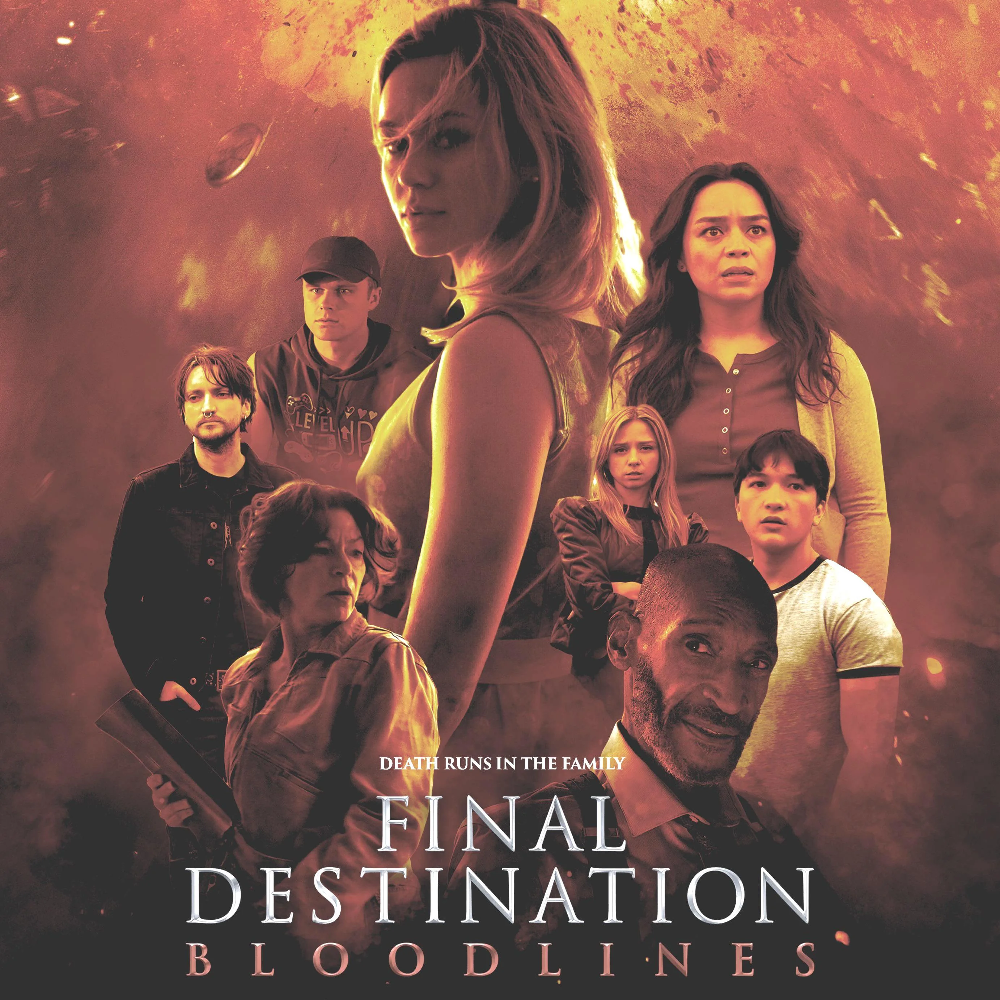

Nationality: Canadian
Known For: The Watcher, Virgin River
Note: Carries the film as the lead protagonist navigating Death's design
Birthdate: May 25, 1999
Nationality: American
Known For: Stargirl, The Goldbergs
Note: Her chemistry with Santa Juana gives the film its emotional stakes
Nationality: American
Known For: Ratched, The Haunting of Bly Manor
Note: One of several young ensemble members navigating elaborate set-piece deaths
Birthdate: August 17, 1991
Nationality: Canadian
Known For: The 100, The Killing
Note: Brings sardonic humor to a franchise known for taking its deaths seriously
Nationality: Canadian
Awards: Genie Award
Known For: The Sweet Hereafter, eXistenZ
Note: Her role as the original survivor anchors the new mythology of the bloodline curse